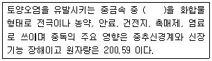
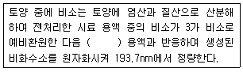
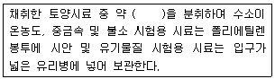
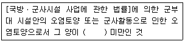
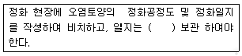

토양환경기사 (2010-05-09 기출문제)
1과목: 토양학개론
1. 미국 농무성의 토양분류 기준인 Soll Taxonomy의 토양목 구분 중 “Andidol"에 관한 설명으로 옳은 것은?
- 유기질(식물조직)로 이루어진 늪지(bog)의 토양
- 유기물함량이 낮아 밝은 빛깔을 띠는 토양
- 화산재 토양
- 토양발달이 현저한 토양
(정답률: 알수없음)

2. 공극률 0.2, 다시안 유속(Darcian velocity) 0.2 cm/hr인 포화대수층의 공극에서 실제 지하수가 이동하는 속도는?
- 0.4 cm/hr
- 0.2 cm/hr
- 1.0 cm/hr
- 5.0 cm/hr
(정답률: 82%)
3. 난분해성 유기화학 물질과 가장 거리가 먼 것은?
- 가지구조가 많은 화합물
- 분자 내에 많은 수의 로겐 원소를 함유하는 화합물
- 물에 대한 용해도가 높은 화합물
- 원자의 전하차가 큰 화합물
(정답률: 70%)
4. “습윤, 낮은 온도, 침엽수림, 조립질, 산성토양” 위 조건 하에서 토양표층의 철과 알루미늄 들이 용탈되어 생긴 백색의 표백층과 그 밑에 철과 알루미늄이 집적되어 생긴 흑갈색 또는 적갈색의 집적층을 갖는 토양생성과정은?
- 염류화 작용(salinization)
- 글레이화 작용(gleization)
- 리테라이트화 작용(tateriztion)
- 포드졸화 작용(podzolization)
(정답률: 알수없음)
5. 토양수의 압력이 10,000 bars일 경우 pF로 환산하면 얼마가 되는가?
- 약 4
- 약 5
- 6
- 7
(정답률: 37%)
6. 다음 이온들의 이온 교환 효율을 큰 것에서 작은 것 순으로 옳게 나타낸 것은?
- K＞Mg＞Na
- K＞Na＞Mg
- Mg＞Na＞K
- Mg＞K＞Na
(정답률: 70%)
7. 다음 ( )안에 들어갈 중금속으로 가장 적당한 것은?

- 카드뮴
- 비소
- 납
- 수은
(정답률: 알수없음)
8. 다음에서 오염물질의 이동특성 중 이류(advection)에 해당하는 것은?
- 용액의 농도가 불균일할 때 농도가 높은 곳으로부터 낮은 곳으로 물질이 이동하는 것
- 지하수환경으로 유입된 오염물질이 지하수의 공극유속과 같은 속도로 움직이는 것
- 용질이 다공질 매체를 통하여 이동하는 과정에서 희석 되는 것
- 용질의 유동이 예상보다 늦어지는 현상
(정답률: 100%)
9. 자유면 대수층에서 지하수면의 단위 상승 혹은 강하에 의해 단위 면적을 통해 자유면 대수층의 저류지하수로부터 유입 혹은 유출되는 물의 부피를 나타내는 지하수 및 대수층 관련 용어는?
- 비파압 저류계수
- 비저류계수
- 수두산출률
- 대수저류계수
(정답률: 55%)
10. 세균류를 자급영양세균과 타급영양세균으로 나눌 때, 타급영양세균에 속하는 것은?
- 황세균
- 암모니아화성균
- 철세균
- 질산화성균
(정답률: 60%)
11. 다음의 토양의 탄질비에 관한 설명 중 옳지 않은 것은?
- 미생물에 의한 분해 과정을 거치면서 탄질비는 낮아짐
- 토양 중 질소의 부동화(immobilization)는 보통 탄질비 15 이하에서 일어남
- 탄질비가 50인 유기물을 토양에 가하면 식물체에 질소 기아 현상이 나타남
- 토양 중 유기물은 대부분 CO2로 방출되고 질소는 미생물체의 구성 성분이 됨
(정답률: 54%)
12. 점토광물인 montmorillonite에 관한 설명으로 옳지 않은 것은?
- 대표적인 2:1층상 광물이다.
- montmorillonite는 수분상태에 따라 쉽게 팽창 또는 수축한다.
- montmorillonite는 kaolinite 에 비하여 양이온교환능력(cation exchange capacity)이 매우 작다.
- montmorillonite의 층 전하(電荷)는 주로 Mg2+에 의한 Al3+의 동형지환에 의하여 발생한다.
(정답률: 알수없음)
13. 다음 중 주로 콩과식물의 뿌리에 공생하면서 질소고정을 하는 미생물로 옳은 것은?
- 나이트로소모나스(Nitrosomonas)
- 스트렙토마이세스(Streptomyces)
- 라이조비움(Rhizobium)
- 시카로마이세스(Saccharomyces)
(정답률: 알수없음)
14. 토양의 용적 밀도가 1.2g/cm3이고 입자 밀도가 2.6g/cm3일 때 토양의 공극률은?
- 38.2%
- 46.2%
- 53.8%
- 61.8%
(정답률: 알수없음)
15. 토양의 CEC(양이온교환용량)에 대한 설명으로 옳지 않은 것은?
- 일정량의 토양교질이 보유할 수 있는 교환성 양이온의 총량을 말한다.
- 온대지방 토양의 교질입자는 대체로 양전하보다 음전하의 크기가 크다.
- 토양의 교질입자의 음전하는 식물의 생육에 중대한 영향을 미친다.
- 자연토양의 경우 여러 가지 점토광물의 혼합물로서 그 CEC는 대략 2000~3000 cmol/kg 범위 정도이다.
(정답률: 60%)
16. 토양오염은 토양오염물질의 특성에 따라 오염의 양상이 달라진다. 다음 중 유기오염물질의 특성을 좌우하는 인자와 가장거리가 먼 것은?
- 증기압
- 착염물질 형섣도
- 헨리상수(공기/물 분배계수)
- 옥탄올/물 분배계수
(정답률: 알수없음)
17. 토양 내에 존재하는 부식물질의 설명으로 옳지 않은 것은?
- 부식탄(부식회, humin)은 알칼리에는 용해되나 산에는 용해되지 않는 물질이다.
- 부식산(humic acid)은 분자량의 80%가 100,000g/mol 이상인 산성물질로서 무정형이다.
- 폴브산(fulvic acid)은 알칼리와 산에 모두 용해되는 물질이다.
- 부식물질은 비부식물질에 비하여 구조가 복잡하여 분해에 대한 저항성이 크다.
(정답률: 70%)
18. 양이온교환용량 30cmolcㆍkg-1이고, Ca : 4cmolㆍkg-1, Fe : 3cmolcㆍkg-1, Mg : 2cmolcㆍkg-1, Al : 2cmolcㆍkg-1, Na : 1cmolcㆍkg-1, K : 1cmolcㆍkg-1, Si : 1cmolcㆍkg-1을 함유한 토양의 염기포화도는?
- 약 27%
- 약 33%
- 약 40%
- 약 50%
(정답률: 알수없음)
19. 지하수 상류와 하루 두 지점의 수두차 1.5m, 두 지점사이의 수평거리 500m, 투수계수 250m/day일 때 대수층의 단면적 6m2인 지하수의 유량은? (단, Darcy 법칙 적용, 공극률은 고려하지 않음)
- 2.7m3ㆍday-1
- 3.3m3ㆍday-1
- 4.5m3ㆍday-1
- 5.6m3ㆍday-1
(정답률: 70%)
20. 산성비가 토양에 미치는 영향을 설명한 내용 중 옳지 않은 것은?
- 토양으로부터 알루미늄의 용해도가 증가한다.
- 칼슘, 마그네슘 등 염기의 용출이 가속화 된다.
- 용해된 알루미늄은 식물에만 영향을 준다.
- 토양의 산성화가 촉진된다.
(정답률: 100%)
2과목: 토양 및 지하수 오염조사기술
21. 다음은 수소화물생성-원자흡수분광광도법을 적용한 비소 측정에 관한 설명이다. ( )안에 옳은 내용은?

- 수소화붕소나트륨
- 수소화이질소나트륨
- 수소화염화주석나트늄
- 수소화이염화나트륨
(정답률: 100%)
22. 토양정밀조사 절차의 단계로 가장 거리가 먼 것은?
- 기초조사
- 정밀조사
- 실태조사
- 개황조사
(정답률: 100%)
23. 수소이온농도(유리 전극법) 측정 시 간섭물질 및 간섭에 관한 설명으로 옳지 않은 것은?
- 토양을 오랫동안 방치하면 미생물의 작용으로 탄산가스가 발생하여 pH가 낮아질 수 있다.
- pH11 이상의 시료는 오차가 크게 발생할 수 있으므로 오차가 적은 특수전극을 사용한다.
- 토양 중 염류의 농도가 높아지면 pH 값이 낮아지는 경우가 있다.
- 용액의 탁도, 클로이드성 물질에 의한 간섭영향으로 유리전극은 토양현탁 제거 후 측정한다.
(정답률: 80%)
24. 토양 중 불소(자외선/가시선 분광법) 측정에 관한 설명으로 옳지 않은 것은?
- 불소가 진홍색의 지르코니움-발색시약과의 반응으로 무색의 음이온복합체를 형성하는 과정을 이용한다.
- 다량의 염소이온이 함유되어 있으면 염화주석용액으로 염소를 제거한다.
- 토양 중 정량한계는 10mg/kg이다.
- 불소이온과 지르코니움 이온 사이의 반응속도는 반응혼합물의 산도에 따라 달라진다.
(정답률: 알수없음)
25. 구리(유도결합플라스마-원자발광분광법) 측정 시 정밀도로 옳은 것은?
- 정밀도 5% 이내(% RSD)
- 정밀도 10% 이내(% RSD)
- 정밀도 15% 이내(% RSD)
- 정밀도 30% 이내(% RSD)
(정답률: 알수없음)
26. 다음은 시료의 채취 및 보관 방법에 관한 설명이다. ( )안에 내용으로 옳은 것은?

- 100g
- 200g
- 300g
- 500g
(정답률: 알수없음)
27. 6가 크롬(자외선/가시선 분광법) 측정시 잔류염소가 시료에 공존하여 발색을 방해할 때 조치내용으로 옳은 것은?
- 시료에 수산화나트륨용액(20%)을 넣어 pH 12 정도로 조절한 다음, 피로인산나트륨을 5mL 정도 넣어 제거한다.
- 시료에 수산화나트륨용액(20%)을 넣어 pH 12 정도로 조절한 다음, 입상 활성탄을 10% 정도 되게 넣어 교반제거한다.
- 시료에 수산화나트륨용액(20%)을 넣어 pH 10 정도로 조절한 다음, 아스크로빈산나트륨을 5mL 정도 넣어 제거한다.
- 시료에 수산화나트륨용액(20%)을 넣어 pH 10 정도로 조절한 다음, 아비산나트륨을 2% 정도 되게 넣어 제거한다.
(정답률: 46%)
28. 토양 중 폴리클로리네이티드비페닐(PCB)을 추출하기 위해 사용하는 용매로 가장 적절한 것은? (단, 기체크로마토그래피법 적용)
- 아세톤
- 사염화탄소
- 클로로포름
- 노말헥산
(정답률: 90%)
29. 저장물질이 있는 누출검사대상시설에 대한 누출검사 방법인 기상부의 시험법에 관한 설명으로 옳지 않은 것은?
- 미가압시험은 대기압보다 높은 압력(200mmH2O)을 사용하여 누출여부를 판정하는 방법이다.
- 누출검사대상시설의 기상부 및 기상부에 접속되어있는 저장시설과 분리하여 폐쇄할 수 없는 부속배관부의 누출여부를 판단하는 기밀시험이다.
- 검사기기인 압력계는 최소눈금 1mmH2O를 읽을 수 있는 정밀도를 가진 압력계를 말한다.
- 검사기간인 가압장치의 가압치는 200mmH2O, 400mmH2O, 1000mmH2O를 기준으로 한다.
(정답률: 50%)
30. 저장물질이 없는 누출검사대상시설 - 가압시험법을 적용하여 누출 검사를 할 때 주의 사항과 가장 거리가 먼 것은?
- 시험기간 동안 화기의 사용을 금한다.
- 기상변화가 심할 때는 시험을 실시하지 않는다.
- 시험기간 동안 진동 등 압력변화에 영향을 주는 경우가 없도록 한다.
- 가압으로 배출된 가스를 별도의 안전한 공간으로 이동 시킨다.
(정답률: 알수없음)
31. 온도에 대한 설명으로 옳지 않은 것은?
- 찬 곳은 따로 규정이 없는 한 0~15℃의 곳을 뜻한다.
- 온수는 6~70℃을 뜻한다.
- 냉수는 4℃ 이하를 뜻한다.
- ‘수욕상 또는 수욕 중에서 가열한다’ 함은 따로 규정이 없는 한 수은 100℃에서 가열함을 뜻하고 약 100℃의 증기욕을 쓸 수 있다.
(정답률: 59%)
32. 토양의 수분함량 측정에 관한 설명으로 옳지 않은 것은?
- 시료를 1⑤-110℃에서 4시간 건조하고 데시케이터에서 식힌 후 항량으로 하고 무게를 정확히 단다.
- 토양 중 수분을 0.1%까지 측정한다.
- 시료는 24시간 이내에 증발처리를 하여야 하며 최대한 48시간을 넘기지 말아야 한다.
- 시료를 보관하여야 할 경우 미생물에 의한 분해를 방지하기 위하여 0~4℃로 보관한다.
(정답률: 82%)
33. 토양 중 시안(이온전극법) 측정에 관한 설명으로 옳지 않은 것은?
- 토양 중 시안의 정량한계는 0.5mg/kg이다.
- 토양을 pH 4 이하의 산성으로 조절 후 시안 이온전극과 비교전극을 사용하여 전위를 측정한다.
- 시안화합물을 측정할 때 방해물질들을 증류하면 대부분 제거된다.
- 잔류염소가 함유된 시료는 잔류염소 20mg당 아비산나트륨액(10%) 0.7mL를 넣어 제거한다.
(정답률: 알수없음)
34. 토양환경평가방법 및 절차 단계 중 1단계(기초조사)에서 이루어지는 과정내용과 가장 거리가 먼 것은?
- 조사계획 수립
- 자료조사
- 방문조사
- 청취조사
(정답률: 70%)
35. 저장물질이 있는 누출검사대상시설(액상부의 시험법)의 누출판정기준에 관한 내용으로 옳은 것은?
- 누출과 비누출을 판정하는 누출량이며 검사대상시설의 용량에 관계없이 일괄 적용된다.
- 누출과 비누출을 판정하는 누출량이며 검사대상시설의 용량에따라 차등 적용된다.
- 누출과 비누출을 판정하는 누출속도이며 검사대상시설의 용량에 관계없이 일괄 적용된다.
- 누출과 비누출을 판정하는 누출속도이며 검사대상시설의 용량에 따라 차등 적용된다.
(정답률: 알수없음)
36. 토양오염공정시험기준의 규정에 의한 용어의 설명으로 옳지 않은 것은?
- 가스체의 농도는 표준상태(0℃, 1기압, 상대습도 0%)로 환산 표시된다.
- “정확히 단다”라 함은 규정된 양의 검체를 취하여 분석용 저울로 0.1mg까지 다는 것을 말한다.
- “함량으로 될 때까지 건조한다”라 함은 같은 조건에서 1시간 더 건조할 때 전후 무게의 차가 g당 0.3mg 이하일 때를 말한다.
- 감압 또는 진공이라 함은 따로 규정이 없는 한 15mmH2O 이하를 말한다.
(정답률: 60%)
37. 저장물질이 없는 누출검사대상시설의 누출검사방법 중 가압시험법에 대한 설명으로 옳지 않은 것은?
- 안정된 시험압력이라 함은 가압 후 유지시간동안 입력 강하가 시험압력의 10%이하인 압력을 말한다.
- 누출여부에 대한 추가확인을 위하여 비눗물, 마이크로 폰 등 추가적인 도구를 사용할 수 있다.
- 안정된 압력 확인 후 30분 동안 측정된 압력강하가 안정된 시험압력의 5%를 초과할 경우에는 불합격으로 한다.
- 검사기기인 압력계(압력자기기록계)는 최소눈금이 시험압력의 5%이내이고 이를 읽고 측정압력의 기록이 가능한 압력계이어야 한다.
(정답률: 70%)
38. 트리클로로 에틸렌과 테트리클로로 에틸렌을 분석하기 위해서 사용하는 검출기로 가장 적절한 것은? (단, 퍼지-트랩 기체크로마토그래피 기준)
- 전기전도도검출기
- 불꽃염화 검출기
- 불꽃이온화 검출기
- 전자포착검출기
(정답률: 60%)
39. 점도관리요소인 검정곡선 중 상대검정극선법의 내부표준 물질에 관한 설명으로 옳은 것은?
- 상대검정곡선법은 시험 분석하려는 성분과 물리, 화학적으로 성질이 유사하며 시료에 함유된 수순물질을 내부표준물질로 선택한다.
- 상대검정곡선법은 시험 분석하려는 성분과 물리, 화학적으로 성질이 유사하나 시료에는 없는 순수물질을 내부표준물질로 선택한다.
- 상대검정곡선법은 시험 분석하려는 성분과 물리, 화학적으로 성질이 다르며 시료에 함유된 순수물질을 내부표준물질로 선택한다.
- 상대검정곡선법은 시험 분석하려는 성분과 물리, 화학적으로 성질이 다르고 시료에 없는 순수물질을 내부표준물질로 선택한다.
(정답률: 알수없음)
40. 시료의 수분측정 결과 건조된 증발접시의 무게(W1)는 20.25g, 증발접시와 시료의 무게(W2)는 41.50g, 건조 후 증발접시와 시료의 무게(W3)는 35.50g 이었다면 시료의 수분 함량은?
- 22.2%
- 28%
- 32.2%
- 38.2%
(정답률: 77%)
3과목: 토양 및 지하수 오염정화 기술
41. 동전기 정화방법(electrokinetic remediation)에 대한 설명이다. 기술의 원리 및 적용 등에 관한 설명으로 옳지 않은 것은?
- 지층 속에 전극을 설치한 후 전류를 가하여 지층의 물리, 화학적 및 수리학적 변화를 유도한 후 전도현상을 일으켜 오염물질을 이동, 추출, 제거한다.
- 중금속, 핵종, 페놀, TCE, 톨루엔 그리고 기타 유기 및 무기물질의 제거가 가능한 것으로 알려져 있다.
- 전기염등은 전기경사에 의한 전하를 띤 입자의 이동을 말한다.
- 이온화 경향이 강한 점성토 지층에 유효하며 사질토 지층에서는 적용이 어렵다.
(정답률: 알수없음)
42. Natural Attenuation(자연저감기법)의 영향인자 중 수리 지질학적 인지와 가장 거리가 먼 것은?
- 동수 구배
- 토양입경의 분포
- 오염물질의 농도
- 지표수와 지하수의 관계
(정답률: 60%)
43. 총 1.0m3의 디젤이 지하에 누출되어서 주변 지하수를 오염시켜 약 25000m3(100m×50m×5m)의 디젤 오염운이 지하에 형성되었다. 디젤의 밀도는 0.85g/cm3이고 오염운이 형성된 대수층의 공극률이 30%이었다. 오염운 내 지하수의 평균 디젤농도가 10 mg/L이었다면, 오염운을 형성한 지하수내 디젤량은 누출된 총 디젤량의 몇 %(무게기준)인가?
- 약 4.2%
- 약 8.8%
- 약 16.3%
- 약 23.6%
(정답률: 50%)
44. 다음 미생물 중에서 NO2를 NO3으로 산화시키는 질산화 미생물은?
- Nitrosomomas
- Nitrooacter
- Rhodopseudomonas
- Thiobacillus
(정답률: 알수없음)
45. 오염토양의 불용화처리를 위한 화학적 처리방법에서 오염물질별 첨가제가 바르게 연결된 것은?
- 시안화합물 - 황화나트륨
- 6가크롬화합물-황화나트륨
- 비소화합물 - 염화철(ll)
- 납화합물 - 차이염소나트륨
(정답률: 알수없음)
46. 원위치 air-sparging 기술에 관한 설명으로 옳지 않은 것은?
- 포화대 내에 공기를 주입하여 지하수를 폭기키시므로 VOC를 휘발시켜 제거하는 기술이다.
- 시스템이 저렴하고 효율이 높으며 많은 지역에서 사용해 본 결과 우수성을 인정받고 있다.
- SVE 에 비하여 에너지 소비량이 적고 오염물의 확산이나 dead zone 의 우려가 적다.
- 공기펌프나 송풍기가 연결된 주입정으로 공기가 주입되어 대수층을 따라 수평으로 이동한 후 진공펌프에 의해 압력이 낮은 추출정으로 VOC를 배출한다.
(정답률: 46%)
47. 미생물의 종류별 탄소원과 에너지원이 잘못 연결된 것은? (단, 탄소원-에너지원)
- 화학합성 종속영양 : 유기탄소 - 유기물의 산화환원반응
- 화학합성 자가영양 : CO2 - 유기물의 산화환원반응
- 광합성 종속영양 : 유기탄소 - 빛
- 광합성 자가영양 : CO2 - 빛
(정답률: 알수없음)
48. 호기성 생분해 기술을 적용한다면 5mg/L의 벤젠을 생분해하는데 필요한 이론산소의 양(농도)은? (단, 벤젠의 화학식은 C6H6이다.)
- 약 5.1 mg/L
- 약 9.2 mg/L
- 약 15.4 mg/L
- 약 17.5 mg/L
(정답률: 80%)
49. 토양세척공정에 대한 설명으로 옳지 않은 것은?
- 최종처리공정으로 이용되기보다 오염토양의 양을 단기간에 현저히 줄이고자 할 때 이용된다.
- 토양세척공정의 효과는 토양의 성상에 따른 영향보다 오염물질의 종류에 따른 차이가 매우 크다.
- 휘발성 유기화합물의 경우 단순한 물세척으로 90-99%의 제거효율을 나타낸다.
- 일반적인 제척공정에서 배출되는 토양 중 대부분의 부피를 차지하는 것은 모래 및 자갈류 이다.
(정답률: 67%)
50. 토양증기추출에 관한 설명으로 옳은 것은?
- 오염물질의 잔존 독성이 없음
- 지반구조와 상관없이 층 처리시간 예측이 용이함
- 추출된 기체의 후처리가 필요함
- 증기압이 나은 오염물의 제거효율이 높음
(정답률: 55%)
51. 기름으로 오염된 지하수를 1000m2/day의 유량으로 추출하여 처리하고자 한다. 기름분리를 위한 중력부상식 유수분리조의 최소 표면적은? (단, 기름의 입경은 0.2m, 기름의 비중은 0.92g/cm3, 물의 비중은 1g/cm3, 물의 점성도는 0.01g/cmㆍsec로 하며 Stokes의 법칙 이용)
- 6.64 n2
- 13.29 n2
- 66.4 n2
- 132.9 n2
(정답률: 30%)
52. 지하수와 오염물질들의 수평이동을 제어하기 위해서 지중에 설치되는 수직차단벽(vertlcal cutoff Walls)에 대한 설명으로 옳은 것은?
- 슬러리윌(slurry walls)은 주변보다 높은 수리전도도를 가진 물질을 이용하여 오염물질의 이동을 촉진 시키는 방법이다.
- 수직차단벽은 주변 지하 매질과 수직차단벽의 수리전도도 차이가 적을수록 차단효과가 높다.
- 슬러리윌(slurry walls)은 오염되지 않은 지하수를 오염된 지역으로부터 격리시키는데 사용될 수 있다.
- 슬러리윌(slurry walls)은 지하로의 침출수 흐름을 제어할 수 있으나 오염물질의 분해 또는 자체효과를 증진 시킬 수는 없다.
(정답률: 70%)
53. 실험실에서의 예비실험 결과 독성물질의 1차 반응 분해상수가 0.02day-1임을 알았다. 이 물질의 반감기는? (단, 자연지수 기준)
- 약 35일
- 약 45일
- 약 55일
- 약 65일
(정답률: 알수없음)
54. 식물을 이용하여 오염된 토양이나 지하수를 정화하는 기술을 식물정화법이라고 한다. 식물정화법에 대한 설명으로 옳은 것은?
- 식물은 필요한 무기영양분을 대부분 이온형태로 뿌리를 통해서 흡수한다.
- 식물에 의한 추출에 적합한 식물들은 수확이 가능한 조직내에 고동도의 금속을 축적하고 이에 대한 내성이 있어야 한다.
- 방향족 탄화수소, 할로겐화 방향족 탄화수소, 유기인 화합물 등의 오염물질은 식물에 의한 분해로 정화된다.
- 토양 내 알루미늄은 이온과 물 흡수력을 과잉 증진시켜 결국 독성으로 작용하게 된다.
(정답률: 20%)
55. 매립지 토양층에서 발생하는 혐기성분해에 의해, glucoose(C6H12C6)로 분해되는 반응식이 다음과 같을 때, 50g의 glucose가 완전히 분해되어 발생되는 메탄가스의 용적은? (단, 토양층에서 1mole의 메탄가스의 용적은 25L로 가정한다. C6H12O6→3CO2+3CH4)
- 약 11L
- 약 21L
- 약 31L
- 약 41L
(정답률: 알수없음)
56. 다음의 미생물 반응 중에서 산화-환원반응으로 얻게 되는 에너지 크기가 가장 작은 것은?
- 혐기성 황산염 환원
- 혐기성 질산화
- 혐기성 질산염 환원
- 혐기성 메탄발효
(정답률: 50%)
57. 지중 유리화기법(Vitrification, in - situ)에 관한 설명으로 옳지 않은 것은?
- 오염토양을 전기적으로 용융시킴으로써 용출 특성이 매우 적은 결정구조로 만드는 기법이다.
- 중금속 등 무기물질 용융제거에 주로 활용되며 휘발성 유기물질이 분포된 지역은 적용하지 않는다.
- 정화된 토양에 유리화된 물질이 포함되어 있기 때문에 분리하지 않으면 다시 토양을 사용하는데 많은 제약이 따른다.
- 대수면 아래에 분포하고 있는 오염물질을 처리하는 경우에는 재오염 방지기술이 필요하다.
(정답률: 50%)
58. 고형화/안정화된 폐기물들의 위해성을 평가하기 위한 용출능 평가실험 방법으로 인조 산성 강우액을 이용하여 물체로부터 연속적으로 오염물을 추출하는 방법은?
- TCLP(toxicity characteristic leaching procedure) 시험법
- MEP(multiple extract Procedure) 시험법
- EP TOX(extraction procedure toxicity Test) 시험법
- MWEP(monofill waste extraction procedure) 시험법
(정답률: 42%)
59. 관개수와 배수량에 함유되어 있는 나트륨 함량을 칼슘과 마그네슘 함량의 비율로 나타낸 나트륨 흡착비는?
- REC
- CEC
- SAR
- TDS
(정답률: 100%)
60. 식물정화법의 처리 원리 중 식물에 의한 안정화 방식으로 처리 가능한 대표적인 식물종은?
- 포플러나무
- 인도겨자
- 보리
- 해바라기
(정답률: 알수없음)
4과목: 토양 및 지하수 환경관계법규
61. 토양보전기본계획에 포함되어야 하는 사항과 가장 거리가 먼 것은?
- 토양오염의 현황ㆍ진행상황 장래 예측
- 토염토양의 정화 및 복원에 관한 사항
- 토양오염평가에 관한 시책 방향
- 토양오염방지에 관한 사항
(정답률: 알수없음)
62. 토양오염우려기준으로 옳지 않은 것은? (단, 지적법에 따른 지목이 전, 답(1지역)인 경우이며, 단위는 mg/kg임)
- 카드뮴 -4
- 구리 - 150
- 비소 - B
- 수은 - 4
(정답률: 40%)
63. 규정을 위반하여 대책지역 안에서 특정수질유해물질, 폐기물, 유해화학물질, 오수ㆍ분뇨 또는 가축분뇨를 버린자에 대한 과태료 기준은?
- 100만원 이하
- 200만원 이하
- 300만원 이하
- 500만원 이하
(정답률: 알수없음)
64. 다음의 지하수 수질기준 설정 항목 중 수질기준이 옳지 않은 것은?
- 톨루엔 : 생활용수로 이용 - 1.0mg/L 이하
- 트리클로로에틸렌 : 생활용수로 이용 - 0.03mg/L 이하
- 수은 : 공업용수로 이용 - 0.01mg/L 이하
- 6가 크롬 : 공업용수로 이용 - 0.1mg/L 이하
(정답률: 알수없음)
65. 토양관련전문기관 또는 토양정화업의 기술인력이 이수하여야 하는 교육과정으로 옳은 것은?
- 국립환경과학원장이 개설하는 토양환경관리의 교육과정
- 환경보전협회장이 개설하는 토양환경관리의 교육과정
- 시도보건환경원장이 토양환경관리의 교육과정
- 국립환경인력개발원장이 토양환경관리의 교육과정
(정답률: 70%)
66. 법 규정에 의한 등록을 하지 아니하고 토양정화업을 한 자에 대한 벌칙 기준으로 옳은 것은?
- 3년 이하의 징역 또는 2천만원 이하의 벌금
- 2년 이하의 징역 또는 1천만원 이하의 벌금
- 1년 이하의 징역 또는 5백만원 이하의 벌금
- 6월 이하의 징역 또는 3백만원 이하의 벌금
(정답률: 30%)
67. 다음 중 특정토양오염관리대상시설과 가장 거리가 먼 것은?
- 송유관시설
- 유독물의 제조 및 저장시설
- 석유류의 제조 및 저장시설
- 석탄류의 제조 및 저장시설
(정답률: 50%)
68. 법 규정에 의한 오염토양의 정화방법과 가장 거리가 먼 것은?
- 오염물질의 고형화 및 안정화 등 무기, 유기적 처리
- 오염물질의 소각, 분해 등 열적 처리
- 오염물질의 차단, 분리배출, 세척처리 등 물리, 화학적 처리
- 미생물을 이용한 오염물질의 분해 등 생물학적 처리
(정답률: 알수없음)
69. 지하수를 생활용수로 이용하는 경우 일반오염물질 항목이 아닌 것은?
- 총대장균군
- 질산성 질소
- 용해성 인
- 염소이온
(정답률: 70%)
70. 시ㆍ도지사가 오염 원인자에게 토양정밀조사를 받을 것을 명할 때에는 토양오염지역의 범위 등을 감안하여 얼마의 기간 범위 안에서 이행 기간을 정하여야 하는가? (단, 연장 기간은 고려하지 않음)
- 30일의 범위 안
- 60일의 범위 안
- 3월의 범위 안
- 6월의 범위 안
(정답률: 알수없음)
71. 토양환경보전법에서 사용하는 용어의 정의로 옳지 않은 것은?
- 토양오염물질 : 토양오염의 원인이 되는 물질로서 환경부령이 정하는 것을 말한다.
- 특정토양오염관리대상시설 : 토양을 현저히 오염시킬 우려가 있는 토양오염관리대상시설로서 환경부령이 정하는 것을 말한다.
- 토양 정화 : 생물학적 또는 물리ㆍ화학적 처리 등의 방법으로 토양종의 오염물질을 감소ㆍ제거하거나 토양중의 오염물질에의한 위해를 완화하는 것을 말한다.
- 토양오염관리대상시설 : 토양오염물질을 생산ㆍ운반ㆍ저장ㆍ취급ㆍ가공 또는 처리하는 시설ㆍ장치ㆍ건물ㆍ건축물 등으로 환경부령이 정하는 것을 말한다.
(정답률: 46%)
72. 시ㆍ도지사 또는 시장ㆍ군수ㆍ구청장이 상시 측정ㆍ토양오염실태조사 또는 토양 정밀조사 결과 우려기준을 넣는 경우에 대통령이 정하는 바에 따라 기간을 정하여 오염원인자에게 실시토록 명할 수 있는 조치 사항과 거리가 먼 것은?
- 토양오염관리대상시설의 개선 또는 이전
- 특정토양오염관리대상시설의 사용금지
- 당해 토양오염물질의 사용제한 또는 사용중지
- 오염토양의 정화
(정답률: 50%)
73. 다음은 오염원인자가 토양정화업자에게 위탁하지 아니하고 직접 정화할 수 있는 경우의 기준이다. ( )안에 내용으로 옳은 것은?

- 5 세제곱 미터
- 10 세제곱 미터
- 25 세제곱 미터
- 50 세제곱 미터
(정답률: 70%)
74. 다음은 토양정화업자의 준수사항에 관한 내용이다. ( )안에 들어갈 내용으로 옳은 것은?

- 1년간
- 2년간
- 3년간
- 5년간
(정답률: 55%)
75. 수질검사 대상이 되는 지하수의 기준으로 옳은 것은?
- 공업용수로서 1일 양수능력이 10톤 이상인 경우
- 공업용수로서 1일 양수능력이 30톤 이상인 경우
- 공업용수로서 1일 양수능력이 50톤 이상인 경우
- 공업용수로서 1일 양수능력이 100톤 이상인 경우
(정답률: 82%)
76. 토양보전대책지역의 지정표지판에 관한 내용으로 옳지 않은 것은?
- 표지판의 규격은 가로 3미터, 세로 2미터, 높이 1.5미터 이상으로 하여야 한다.
- 흰색 바탕에 검은색 글자를 사용하여야 한다.
- 약도는 표지판 설치 위치에서 방향 및 지점 등을 누구나 알 수 있도록 하여야 한다.
- 표지판은 사방에서 잘 보이는 곳에서 견고하게 설치 하여야 한다.
(정답률: 알수없음)
77. 국토해양부장관은 지하수의 체계적인 개발ㆍ이용 및 효율적인 보전ㆍ관리를 위하여 지하수관리기본계획의 수립을 몇 년 단위로 세워야 하는가?
- 3년
- 5년
- 10년
- 15년
(정답률: 80%)
78. 특정토양오염관리대상시설에 토양오염방지시설을 설치한 경우, 토양오염도 검사주기 기준으로 옳은 것은?
- 저장시설 설치 후 최초 검사를 한 후 1년, 2년, 3년 되는 해에 각각 1회
- 저장시설 설치 후 최초 검사를 한 후 1년, 3년, 5년 되는 해에 각각 1회
- 저장시설 설치 후 최초 검사를 한 후 3년, 6년, 10년 되는 해에 각각 1회
- 저장시설 설치 후 최초 검사를 한 후 5년, 10년, 15년 되는 해에 각각 1회
(정답률: 알수없음)
79. 토양관련 전문기관의 지정기준 중 토양오염조사기관에 관한 시설기준으로 옳은 것은?
- 실험실 : 150제곱미터 이상(실험실에 사무실이 있는 경우에는 해당 사무실의 면적을 포함하여 산정)
- 실험실 : 150제곱미터 이상(실험실에 사무실이 있는 경우에는 해당 사무실의 면적을 제외하여 산정)
- 실험실 : 180제곱미터 이상(실험실에 사무실이 있는 경우에는 해당 사무실의 면적을 포함하여 산정)
- 실험실 : 180제곱미터 이상(실험실에 사무실이 있는 경우에는 해당 사무실의 면적을 제외하여 산정)
(정답률: 34%)
80. 토양정화업의 등록요건 중 장비에 관한 기준으로 옳지 않은 것은?
- 현장용 수질특정기 1식(수소이온농도, 수은, 전기전도도, 용존산소, 산화환원전위의 측정이 가능할
- 휴대용 가스측정장비 1식(휘발성유기화합물질, 산소, 이산화탄소 및 메탄의 측정이 가능할 것)
- 시료 채취가 1대(깊이 6미터 이상 시료체취가 가능할 것)
- 시하수위 측정기(지하 10미터 이상 측정이 가능할 것)
(정답률: 91%)